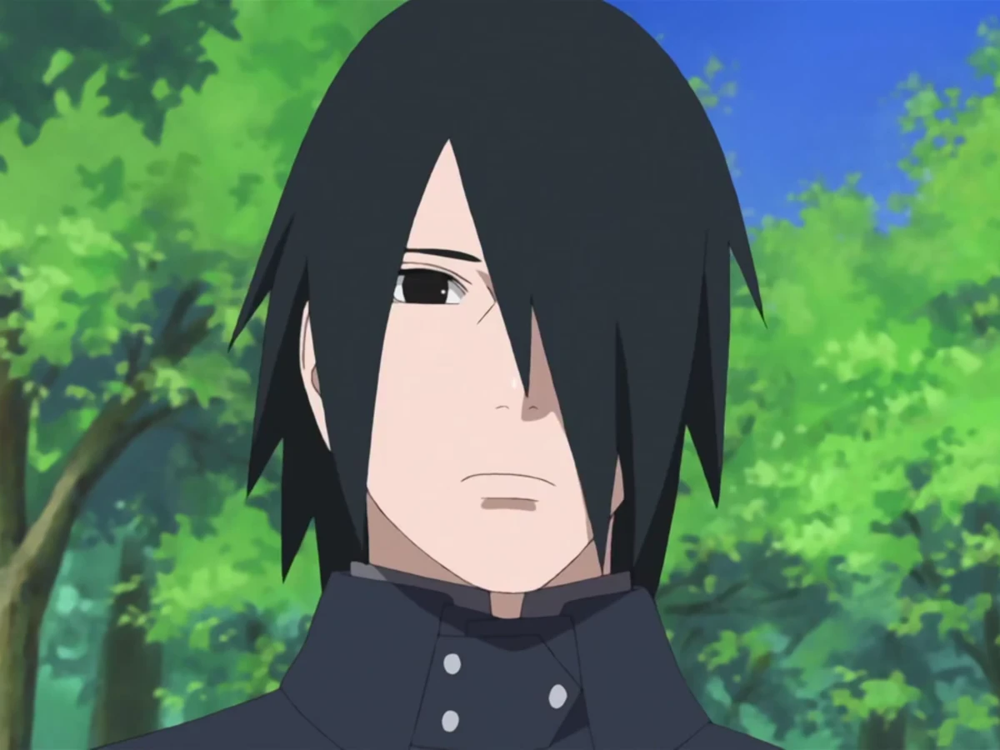
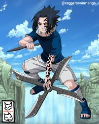
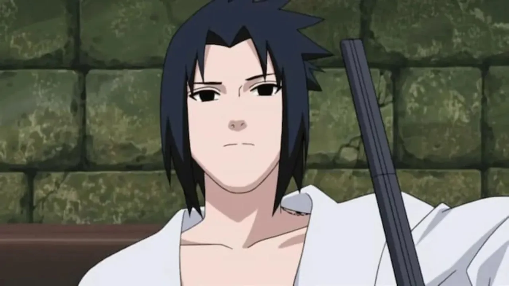
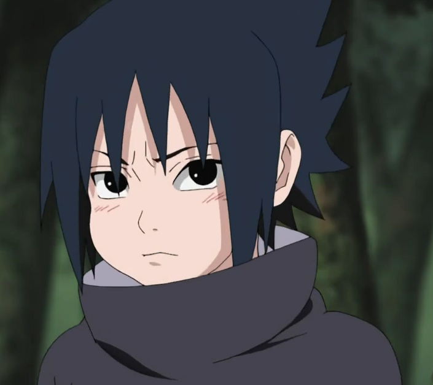
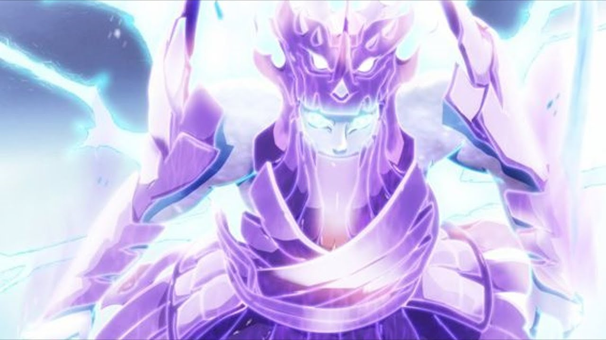

¡Por Qué Sasuke Uchiha es el mejor en la serie de Boruto!
FASES DE Sasuke









Análisis de la Evolución de Sasuke
Sasuke Uchiha, a pesar de las recientes pérdidas de poder y la carga de ser el soporte de la Aldea de la Hoja, posee un potencial de crecimiento incalculable. Su maestría en el Genjutsu y su intelecto estratégico son habilidades que no dependen únicamente de su poder ocular. En un contexto donde la fuerza bruta de Otsutsuki es la norma, la mejora de Sasuke no radicará en recuperar su Rinnegan, sino en refinar y maximizar las herramientas que le quedan: su espada, su Taijutsu excepcional y la adaptabilidad táctica que siempre lo ha caracterizado. Su mejora es inminente...